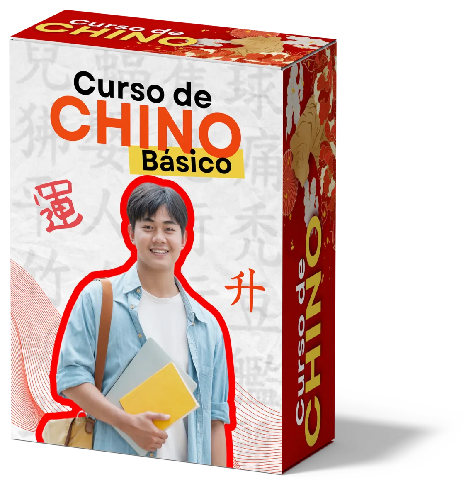
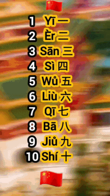
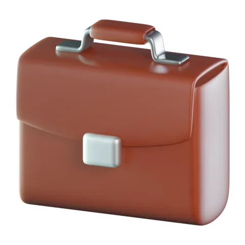

CHINO BÁSICO
- Diferencias en la china simplificada y tradicional.
- Introducción al pinyin como base del sistema de romanización para pronunciar palabras.
- Estructura del idioma: cómo funciona el chino mandarín.
APRENDE EL IDIOMA MÁS HABLADO DEL MUNDO


APRENDE CHINO FÁCILMENTE SIN SALIR DE TU CASA
Aprende chino te conecta con una de las lenguas más habladas del mundo, ampliando tus horizontes personales y profesionales.
Explora la historia y la cultura de China mientras mejoras tus habilidades lingüísticas, sumergiéndote en una experiencia educativa enriquecedora.

Dominar el chino mandarín te abre oportunidades de colaboración y trabajo con una de las economías más influyentes del mundo.
El aprendizaje del chino mejora la memoria, la concentración y las habilidades de resolución de problemas, potenciando tu desarrollo tanto académico como profesional.
Desde la pronunciación hasta la escritura, ¡todo en un solo lugar!